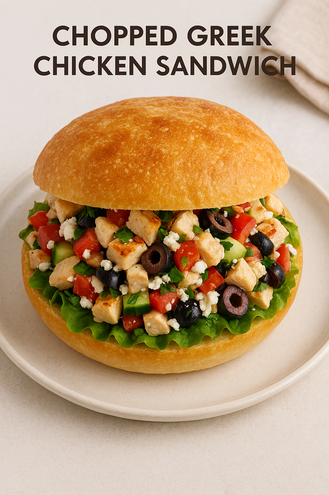

Home
Chopped Greek Chicken Sandwich

Greek Chicken Sandwich
This chopped Greek chicken sandwich makes life easy when you can't decide between a Greek salad and a chicken sandwich. Pile up the components of a salad, chop, mix, and pack them into a sandwich roll, and you will absolutely love the result.
Ingredients
(1 serving)
- 1 sandwich roll
- 6 ounces cooked chicken
- 1/4 cup thinly sliced green pepper
- 4 grape tomatoes, thinly sliced, or more to taste
- 4 slices English cucumber, or more to taste
- 6 pitted Greek olives, halved, or more to taste
- 3 thin slices red onion, or more to taste
- 1 cup thickly sliced hearts of Romaine
- salt and freshly ground black pepper to taste
- 1 pinch cayenne pepper, or to taste
- 1/4 teaspoon dried oregano, or to taste
- 1/4 cup crumbled feta cheese
- 1/2 lemon, juiced
- 2 tablespoons extra-virgin olive oil
Steps
- Gather all ingredients.
- Cut sandwich roll 3/4 of the way in, and if desired, remove some of the crumb from the inside to make more room for filling.
- Pile up chicken, green pepper, tomatoes, cucumber, olives, and onion. Season with salt, black pepper, cayenne, and oregano, and then use a cleaver or large knife to chop everything into about 1/2-inch pieces.
- Add Romaine, and chop again until everything into about 1/4-inch pieces, or as fine as you want.
- Top with feta, lemon juice, and olive oil. Perform one last, brief chopping until everything is evenly mixed. Taste and adjust seasoning.
- Transfer filling into roll, and serve immediately.